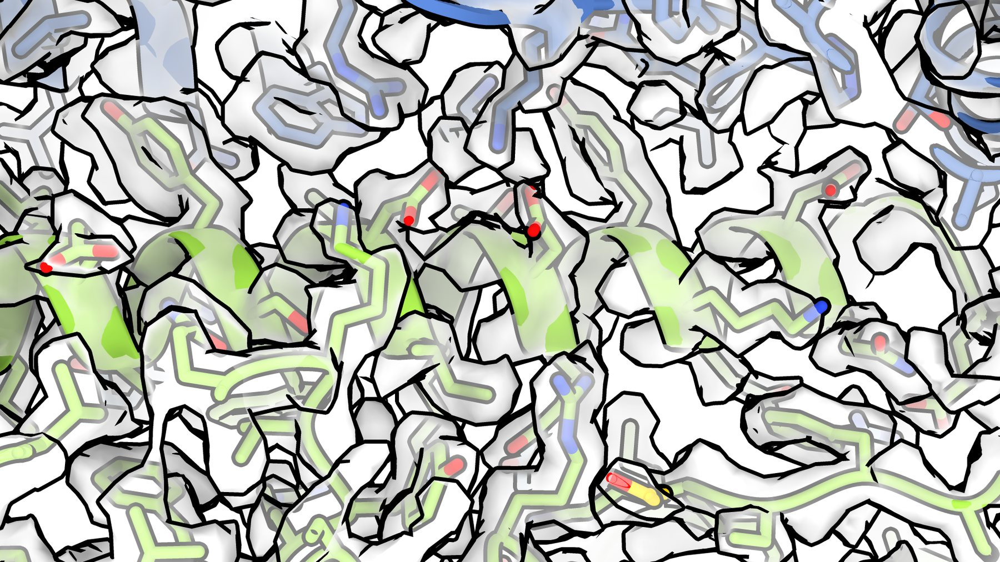

Antibodies are the most direct readout we have of how the immune system sees a
pathogen.
Our lab uses single-particle cryo-electron microscopy (cryo-EM) to determine how human antibodies engage the surface antigens of influenza, norovirus
and bunyaviruses such as hantaviruses and SFTSV, why a few of those interactions protect
broadly across strains, often through molecular features that recur across
different individuals1, and how early exposure imprints and constrains the
repertoire that follows2,3.
We pair this with AI-based protein design, building immunogens that focus the response on conserved, protective epitopes, and testing them in animal models. The elicited antibody response is then analysed structurally, this time at the polyclonal level rather than one antibody at a time, using electron-microscopy-based polyclonal epitope mapping (cryo-EMPEM)4,5. The resulting epitope landscape defines the specificities an immunogen elicited and guides the next round of design, with the aim of accelerating the vaccine development cycle.
1 Jo G et al. Nature Communications 16, 7067 (2025)
2 Sun J, Jo G et al. Nature 653, 528–537 (2026)
3 Li SH, Wang B et al. Cell Host & Microbe 34, 873–887 (2026)
4 Bianchi M et al. Immunity 49, 288–300 (2018)
5 Antanasijevic A et al. Nature Communications 12, 4817 (2021)
Directions
Background
Single-particle cryo-electron microscopy turns a purified sample into an atomic model. The complex is frozen so quickly that the surrounding water never forms ice crystals, and tens of thousands of individual particles are then imaged in random orientations. Combining those images computationally gives a three-dimensional density map detailed enough to trace the protein chain and place individual side chains.